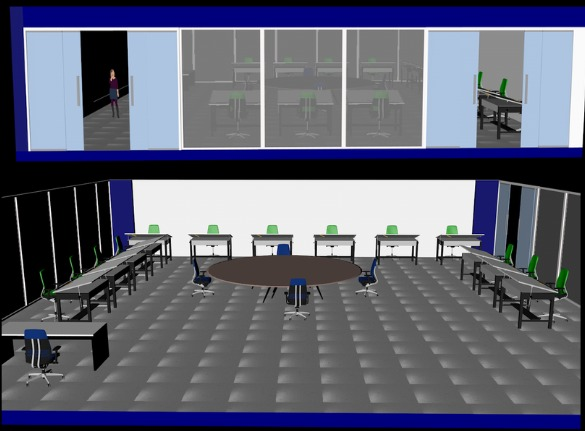
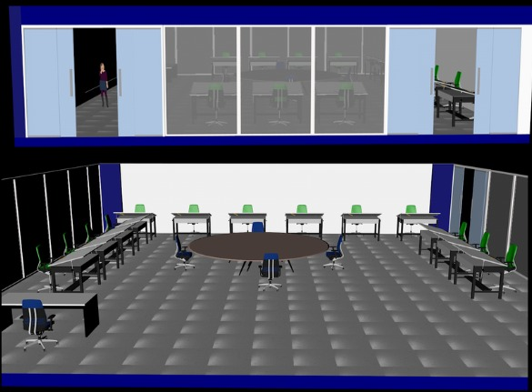

Resultados
Resultados generales
Los resultados obtenidos muestran una mejora significativa en la interacción y orientación de los estudiantes dentro del campus virtual. El acceso a la información es más rápido, intuitivo y atractivo, permitiendo explorar el campus de manera eficiente.
Beneficios observados
- Mayor orientación: los estudiantes encuentran fácilmente aulas, laboratorios y espacios comunes.
- Experiencia atractiva: la navegación 3D aumenta el interés y motivación de los usuarios.
- Acceso remoto eficiente: los alumnos pueden explorar el campus desde cualquier dispositivo.
 
